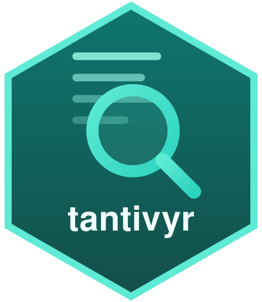

Authors and Citation
Authors
-
Paul Masurel. Copyright holder.
Author of the bundled 'Tantivy' search engine (Rust crate 'tantivy' and its companion crates) -
Laurentiu Nicola. Copyright holder.
Listed in the AUTHORS file of the bundled 'Tantivy' -
Dru Sellers. Copyright holder.
Listed in the AUTHORS file of the bundled 'Tantivy' -
Ashley Mannix. Copyright holder.
Listed in the AUTHORS file of the bundled 'Tantivy' -
Michael J. Curry. Copyright holder.
Listed in the AUTHORS file of the bundled 'Tantivy' -
Jason Wolfe. Copyright holder.
Listed in the AUTHORS file of the bundled 'Tantivy' -
Google LLC. Copyright holder.
Listed in the AUTHORS file of the bundled 'Tantivy' -
Authors of the vendored Rust crates. Copyright holder.
see inst/AUTHORS
Citation
Source: DESCRIPTION
Leite A, Wasiliew M, Vasconcelos H, Amorim C, Bezerra D, Nascimento Barreto J (2026). tantivyr: Fast Full-Text Search for R with 'Tantivy'. R package version 0.1.3, https://strategicprojects.github.io/tantivyr/.
@Manual{,
title = {tantivyr: Fast Full-Text Search for R with 'Tantivy'},
author = {André Leite and Marcos Wasiliew and Hugo Vasconcelos and Carlos Amorim and Diogo Bezerra and Júlia {Nascimento Barreto}},
year = {2026},
note = {R package version 0.1.3},
url = {https://strategicprojects.github.io/tantivyr/},
}
Additional details
Authorship and copyright of the code bundled in tantivyr
========================================================
The tantivyr R package (the R interface in R/ and the Rust bridge in
src/rust/src/) was written by the package authors listed in DESCRIPTION with
role "aut". It is distributed under the MIT license (see LICENSE).
The search engine itself is third-party work. tantivyr wraps and statically
links Tantivy (https://github.com/quickwit-oss/tantivy), a full-text search
engine library written in Rust by Paul Masurel and the Tantivy contributors and
maintained at Quickwit. Tantivy's LICENSE (MIT) attributes its copyright to
"the project authors, as listed in the AUTHORS file", which reads:
# This is the list of authors of tantivy for copyright purposes.
Paul Masurel
Laurentiu Nicola
Dru Sellers
Ashley Mannix
Michael J. Curry
Jason Wolfe
# As an employee of Google I am required to add Google LLC
# in the list of authors, but this project is not affiliated to Google
# in any other way.
Google LLC
tantivyr is an independent R binding. It is not affiliated with, sponsored by
or endorsed by the Tantivy project or by Quickwit, Inc.
Tantivy and the crates it depends on are vendored in
src/rust/vendor.tar.xz so that the package builds offline. Each crate is the
copyright of its respective authors and is used under the terms of its
license, as listed below. The copyright holders are recorded collectively in
DESCRIPTION (role "cph").
crate version license copyright holder(s)
----- ------- ------- -------------------
aho-corasick 1.1.5 Unlicense OR MIT Andrew Gallant
arc-swap 1.9.2 MIT OR Apache-2.0 Michal 'vorner' Vaner
async-trait 0.1.92 MIT OR Apache-2.0 David Tolnay
autocfg 1.5.1 Apache-2.0 OR MIT Josh Stone
base64 0.23.1 MIT OR Apache-2.0 Marshall Pierce
bitflags 2.13.2 MIT OR Apache-2.0 The Rust Project Developers
bitpacking 0.9.3 MIT Paul Masurel
bon 3.10.1 MIT OR Apache-2.0 Elastio Software Inc
bon-macros 3.10.1 MIT OR Apache-2.0 Elastio Software Inc
bumpalo 3.20.3 MIT OR Apache-2.0 Nick Fitzgerald
byteorder 1.5.0 Unlicense OR MIT Andrew Gallant
cc 1.4.7 MIT OR Apache-2.0 Alex Crichton
census 0.4.2 MIT Paul Masurel
cfg-if 1.0.5 MIT OR Apache-2.0 Alex Crichton
crc32fast 1.5.2 MIT OR Apache-2.0 Sam Rijs, Alex Crichton
crossbeam-channel 0.5.17 MIT OR Apache-2.0 The Crossbeam Project Developers, The Go Authors
crossbeam-deque 0.8.8 MIT OR Apache-2.0 The Crossbeam Project Developers
crossbeam-epoch 0.9.21 MIT OR Apache-2.0 The Crossbeam Project Developers
crossbeam-utils 0.8.23 MIT OR Apache-2.0 The Crossbeam Project Developers
crunchy 0.2.4 MIT Eira Fransham
darling 0.24.1 MIT Ted Driggs
darling_core 0.24.1 MIT Ted Driggs
darling_macro 0.24.1 MIT Ted Driggs
datasketches 0.5.0 Apache-2.0 The Apache Software Foundation
deranged 0.5.8 MIT OR Apache-2.0 Jacob Pratt
downcast-rs 2.0.2 MIT OR Apache-2.0 Ashish Myles and contributors
either 1.18.0 MIT OR Apache-2.0 The either contributors
erased-serde 0.4.10 MIT OR Apache-2.0 David Tolnay
errno 0.3.14 MIT OR Apache-2.0 Chris Wong, Dan Gohman
extendr-api 0.9.0 MIT The extendr authors
extendr-ffi 0.9.0 MIT The extendr authors
extendr-macros 0.9.0 MIT The extendr authors
fastdivide 0.4.2 zlib-acknowledgement OR MIT Paul Masurel
fastrand 2.5.0 Apache-2.0 OR MIT Stjepan Glavina
find-msvc-tools 0.1.13 MIT OR Apache-2.0 Alex Crichton
fnv 1.0.7 Apache-2.0 / MIT Alex Crichton
foldhash 0.2.0 Zlib Orson Peters
frostem 1.20260821.8 BSD-3-Clause Xuanwo, frostem contributors, Dr Martin Porter, Richard Boulton, Yoshiki Shibukawa, Olly Betts
fs4 0.13.1 MIT OR Apache-2.0 Dan Burkert, Al Liu
futures-core 0.3.34 MIT OR Apache-2.0 Alex Crichton, The Tokio Authors
futures-macro 0.3.34 MIT OR Apache-2.0 Alex Crichton, The Tokio Authors
futures-task 0.3.34 MIT OR Apache-2.0 Alex Crichton, The Tokio Authors
futures-util 0.3.34 MIT OR Apache-2.0 Alex Crichton, The Tokio Authors
getrandom 0.4.3 MIT OR Apache-2.0 The Rand Project Developers
getrandom 0.3.4 MIT OR Apache-2.0 The Rand Project Developers
hashbrown 0.17.1 MIT OR Apache-2.0 Amanieu d'Antras
htmlescape 0.3.1 Apache-2.0 / MIT / MPL-2.0 Viktor Dahl
ident_case 1.0.1 MIT/Apache-2.0 Ted Driggs
inventory 0.3.24 MIT OR Apache-2.0 David Tolnay
itertools 0.14.0 MIT OR Apache-2.0 bluss
itoa 1.0.18 MIT OR Apache-2.0 David Tolnay
jobserver 0.1.35 MIT OR Apache-2.0 Alex Crichton
js-sys 0.3.105 MIT OR Apache-2.0 The wasm-bindgen Developers
lazy_static 1.5.0 MIT OR Apache-2.0 Marvin Löbel
levenshtein_automata 0.2.1 MIT Paul Masurel
libc 0.2.189 MIT OR Apache-2.0 The Rust Project Developers
linux-raw-sys 0.12.1 Apache-2.0 WITH LLVM-exception OR Apache-2.0 OR MIT Dan Gohman
log 0.4.34 MIT OR Apache-2.0 The Rust Project Developers
lru 0.18.5 MIT Jerome Froelich
lz4_flex 0.14.0 MIT Pascal Seitz, Arthur Silva, ticki
measure_time 0.9.0 MIT Pascal Seitz
memchr 2.8.3 Unlicense OR MIT Andrew Gallant, bluss
memmap2 0.9.11 MIT OR Apache-2.0 Dan Burkert, Yevhenii Reizner, The Contributors
minimal-lexical 0.2.1 MIT/Apache-2.0 Alex Huszagh
murmurhash32 0.4.0 MIT Paul Masurel
nom 7.1.3 MIT Geoffroy Couprie
num-conv 0.2.2 MIT OR Apache-2.0 Jacob Pratt
num-traits 0.2.19 MIT OR Apache-2.0 The Rust Project Developers
once_cell 1.21.4 MIT OR Apache-2.0 Aleksey Kladov
oneshot 0.1.13 MIT OR Apache-2.0 Linus Färnstrand
ordered-float 5.3.0 MIT Jonathan Reem, Matt Brubeck
ownedbytes 0.9.0 MIT Paul Masurel, Pascal Seitz
paste 1.0.15 MIT OR Apache-2.0 David Tolnay
pin-project-lite 0.2.17 Apache-2.0 OR MIT The pin-project-lite contributors
pkg-config 0.3.34 MIT OR Apache-2.0 Alex Crichton
powerfmt 0.2.0 MIT OR Apache-2.0 Jacob Pratt
ppv-lite86 0.2.21 MIT OR Apache-2.0 The CryptoCorrosion Contributors
prettyplease 0.3.0 MIT OR Apache-2.0 David Tolnay
proc-macro2 1.0.107 MIT OR Apache-2.0 David Tolnay, Alex Crichton
quote 1.0.47 MIT OR Apache-2.0 David Tolnay
r-efi 6.0.0 MIT OR Apache-2.0 OR LGPL-2.1-or-later Red Hat, Inc., Microsoft Corporation, David Rheinsberg
r-efi 5.3.0 MIT OR Apache-2.0 OR LGPL-2.1-or-later Red Hat, Inc., Microsoft Corporation, David Rheinsberg
rand 0.9.5 MIT OR Apache-2.0 The Rand Project Developers, The Rust Project Developers
rand_chacha 0.9.0 MIT OR Apache-2.0 The Rand Project Developers, The Rust Project Developers, The CryptoCorrosion Contributors
rand_core 0.9.5 MIT OR Apache-2.0 The Rand Project Developers, The Rust Project Developers
rayon 1.12.0 MIT OR Apache-2.0 The Rust Project Developers
rayon-core 1.13.0 MIT OR Apache-2.0 The Rust Project Developers
readonly 0.2.14 MIT OR Apache-2.0 David Tolnay
regex 1.13.1 MIT OR Apache-2.0 The Rust Project Developers, Andrew Gallant
regex-automata 0.4.18 MIT OR Apache-2.0 The Rust Project Developers, Andrew Gallant
regex-syntax 0.8.11 MIT OR Apache-2.0 The Rust Project Developers, Andrew Gallant
rustc-hash 2.1.3 Apache-2.0 OR MIT The Rust Project Developers
rustix 1.1.5 Apache-2.0 WITH LLVM-exception OR Apache-2.0 OR MIT Dan Gohman, Jakub Konka
rustversion 1.0.23 MIT OR Apache-2.0 David Tolnay
serde 1.0.229 MIT OR Apache-2.0 Erick Tryzelaar, David Tolnay
serde-tuple-vec-map 1.0.1 MIT David Ross
serde_core 1.0.229 MIT OR Apache-2.0 Erick Tryzelaar, David Tolnay
serde_derive 1.0.229 MIT OR Apache-2.0 Erick Tryzelaar, David Tolnay
serde_json 1.0.151 MIT OR Apache-2.0 Erick Tryzelaar, David Tolnay
shlex 2.0.1 MIT OR Apache-2.0 comex, Fenhl, Adrian Taylor, Alex Touchet, Daniel Parks, Garrett Berg
sketches-ddsketch 0.4.1 Apache-2.0 Mike Heffner
slab 0.4.12 MIT Carl Lerche
smallvec 1.16.1 MIT OR Apache-2.0 The Servo Project Developers
stable_deref_trait 1.2.1 MIT OR Apache-2.0 Robert Grosse
strsim 0.11.1 MIT Danny Guo, maxbachmann
syn 3.0.6 MIT OR Apache-2.0 David Tolnay
syn 2.0.119 MIT OR Apache-2.0 David Tolnay
tantivy 0.27.0 MIT Paul Masurel and the Tantivy authors (see tantivy/AUTHORS in inst/COPYRIGHTS)
tantivy-bitpacker 0.27.0 MIT Paul Masurel
tantivy-columnar 0.27.0 MIT The Tantivy authors
tantivy-common 0.27.0 MIT Paul Masurel, Pascal Seitz
tantivy-fst 0.5.0 Unlicense/MIT Andrew Gallant
tantivy-query-grammar 0.27.0 MIT Paul Masurel
tantivy-sstable 0.27.0 MIT The Tantivy authors
tantivy-stacker 0.27.0 MIT The Tantivy authors
tantivy-tokenizer-api 0.7.0 MIT The Tantivy authors
tempfile 3.27.0 MIT OR Apache-2.0 Steven Allen, The Rust Project Developers, Ashley Mannix, Jason White
thiserror 2.0.20 MIT OR Apache-2.0 David Tolnay
thiserror-impl 2.0.20 MIT OR Apache-2.0 David Tolnay
time 0.3.55 MIT OR Apache-2.0 Jacob Pratt, Time contributors
time-core 0.1.9 MIT OR Apache-2.0 Jacob Pratt, Time contributors
time-macros 0.2.32 MIT OR Apache-2.0 Jacob Pratt, Time contributors
typeid 1.0.3 MIT OR Apache-2.0 David Tolnay
typetag 0.2.23 MIT OR Apache-2.0 David Tolnay
typetag-impl 0.2.23 MIT OR Apache-2.0 David Tolnay
unicode-ident 1.0.26 (MIT OR Apache-2.0) AND Unicode-3.0 David Tolnay, Unicode, Inc.
unwrap-infallible 1.0.0 MIT OR Apache-2.0 Mikhail Zabaluev
utf8-ranges 1.0.5 Unlicense/MIT Andrew Gallant
uuid 1.26.1 Apache-2.0 OR MIT Ashley Mannix, Dylan DPC, Hunar Roop Kahlon
wasip2 1.0.4+wasi-0.2.12 Apache-2.0 WITH LLVM-exception OR Apache-2.0 OR MIT The wasip2 contributors
wasm-bindgen 0.2.128 MIT OR Apache-2.0 The wasm-bindgen Developers
wasm-bindgen-macro 0.2.128 MIT OR Apache-2.0 The wasm-bindgen Developers
wasm-bindgen-macro-support 0.2.128 MIT OR Apache-2.0 The wasm-bindgen Developers
wasm-bindgen-shared 0.2.128 MIT OR Apache-2.0 The wasm-bindgen Developers
winapi 0.3.9 MIT/Apache-2.0 Peter Atashian
winapi-i686-pc-windows-gnu 0.4.0 MIT/Apache-2.0 Peter Atashian
winapi-x86_64-pc-windows-gnu 0.4.0 MIT/Apache-2.0 Peter Atashian
windows-link 0.2.1 MIT OR Apache-2.0 Microsoft Corporation
windows-sys 0.61.2 MIT OR Apache-2.0 Microsoft Corporation
windows-sys 0.59.0 MIT OR Apache-2.0 Microsoft
windows-targets 0.52.6 MIT OR Apache-2.0 Microsoft
windows_aarch64_gnullvm 0.52.6 MIT OR Apache-2.0 Microsoft
windows_aarch64_msvc 0.52.6 MIT OR Apache-2.0 Microsoft
windows_i686_gnu 0.52.6 MIT OR Apache-2.0 Microsoft
windows_i686_gnullvm 0.52.6 MIT OR Apache-2.0 Microsoft
windows_i686_msvc 0.52.6 MIT OR Apache-2.0 Microsoft
windows_x86_64_gnu 0.52.6 MIT OR Apache-2.0 Microsoft
windows_x86_64_gnullvm 0.52.6 MIT OR Apache-2.0 Microsoft
windows_x86_64_msvc 0.52.6 MIT OR Apache-2.0 Microsoft
wit-bindgen 0.57.1 Apache-2.0 WITH LLVM-exception OR Apache-2.0 OR MIT Alex Crichton
zerocopy 0.8.63 BSD-2-Clause OR Apache-2.0 OR MIT The Fuchsia Authors
zerocopy-derive 0.8.63 BSD-2-Clause OR Apache-2.0 OR MIT The Fuchsia Authors
zmij 1.0.23 MIT David Tolnay
zstd 0.14.3 BSD-3-Clause Alexandre Bury
zstd-safe 8.2.0 BSD-3-Clause Alexandre Bury
zstd-sys 2.1.2+zstd.1.5.7 BSD-3-Clause Alexandre Bury, Meta Platforms, Inc. and affiliates
156 crates. Name, version and license are those declared in each crate's
Cargo.toml; the holders are the crate's declared `authors` or, when it declares
none, the names in the copyright lines of its license files ("The <crate>
contributors" when neither exists).
Crates offered under several licenses ("MIT OR Apache-2.0" and similar) are
used here under the MIT license, which is the license of tantivyr itself.
The crates that are not available under MIT, with their notices and license
texts, are listed in inst/COPYRIGHTS.
The full license files of every crate are distributed, unmodified, with the
crate's source inside src/rust/vendor.tar.xz.